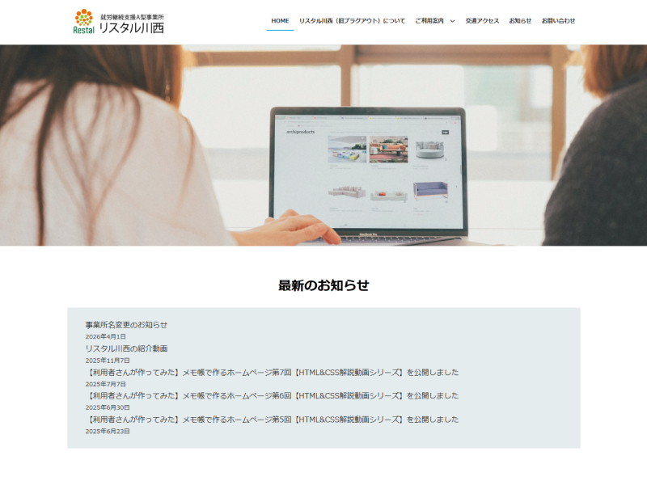

就労継続支援A型事業所リスタル川西

サイトを見る概要
就労継続支援A型事業所の情報発信と見学・利用につなげることを目的に、新規Webサイトを立ち上げました。
指導員と連携しながら、WordPressによるサイト設計・構築を担当しました。
課題
就労継続支援A型事業所の利用を検討しているユーザーにとって、初めての見学には不安があり、予約までの心理的ハードルが高いという課題があった。
目的
就労継続支援A型事業所の利用につなげること。
担当範囲
- デザイン
- コーディング
- WordPress構築
工夫した点
利用者や関係者にとって情報が直感的に理解できるよう、視認性と情報構造の分かりやすさを優先し、過度な装飾を避けたシンプルなデザインとしています。
UI面では、画像ホバー時に軽い拡大アニメーションを加えることで、操作時のフィードバックを自然に伝え、過度にならない範囲でインタラクション性を付与しました。
また、見学予約への導線を強化するため、プラグインを用いてフォームを実装し、ユーザーが「美容院を予約するような感覚」で気軽に申し込める体験設計を意識しています。
成果
Webサイト経由での見学予約獲得に貢献。
使用技術
- WordPress（既存テーマカスタマイズ）
- HTML / CSS（必要に応じて追加CSSで調整）